1. 重装系统之必备软件

致读者: 点击上方 “雪之梦技术驿站” → 点击右上角“ ... ”→ 点选“设为星标★ ” 加上星标，就不会找不到我啦！
偷偷溜进文章的小广告，别害羞，点进去瞅瞅，说不定能发现什么宝藏呢！
文末那个也别错过，说不定是通往秘密花园的钥匙哦！
1.1. 前言
前一阵子电脑出现故障,折腾了好久也没得解决问题.遇到问题如果重启电脑不能解决,那么就只能重装系统了.
雪上加霜的是,不仅要重装系统,修电脑的师傅竟然反馈重装不了Win7的系统,只能无奈刷了Win10的系统!
版本 Windows 10 专业版
版本号 22H2
安装日期 2024/7/13
操作系统内部版本 19045.4651
体验 Windows Feature Experience Pack 1000.19060.1000.0
怀着忐忑不安的心情,多次摸索终于凭借着记忆中的模糊印象,一点一滴的重新安装回了那些熟悉的软件.
离开这些软件,真的超不方便!接下来分享给大家,也给自己留给备忘录.
1.2. IObit Unlocker 文件解锁工具
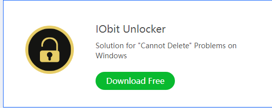
当你尝试删除某个被进程占用的文件时，经常会遇到“文件正在被另一个程序使用”的错误提示，Unlocker就是为了解决这一难题而生。
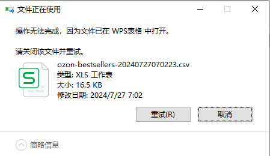
有的时候根本就不知道正要操作的文件被什么进程占用,想要删除当前文件却总是提示被另外的程序占用.
因此强烈推荐这款Unlocker文件解锁工具,不管三七二十一,右键选中文件直接解锁!
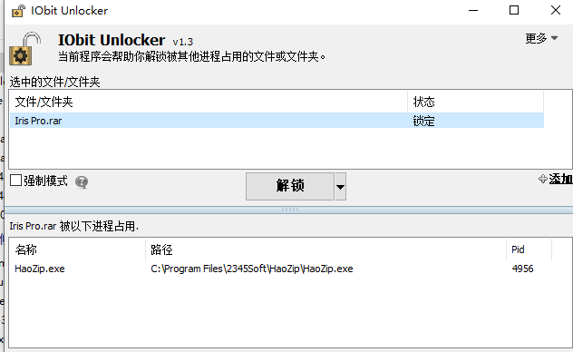
链接：https://pan.baidu.com/s/1lZo_Keau7Aj_9Lg4DfhSug?pwd=y5ry
提取码：y5ry
1.3. IObit Uninstaller 强制卸载软件
不仅可以像自带系统卸载软件,也能卸载浏览器插件等各种功能!
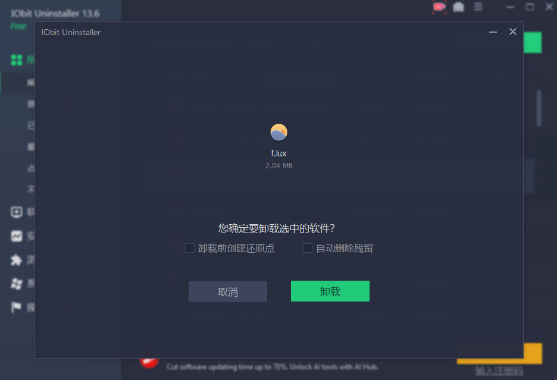
在所有软件中可以按照安装日期排序,看到不喜欢或者捆绑安装的软件怎么办?
那就一键卸载他们呀!
除了卸载捆绑软件外,还可以一次性同时选择多个软件,自动等待系统依次卸载,不用像原生系统那样,再傻傻等着上一个卸载完毕才能继续.
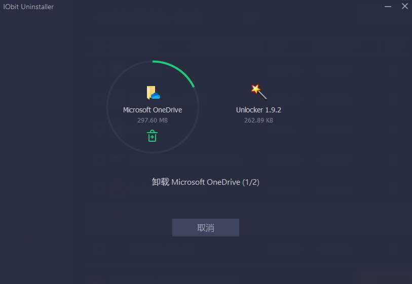
链接：https://pan.baidu.com/s/1bTq4cFI6PqfCr5hwi_5lmw?pwd=8s63
提取码：8s63
1.4. Everything 文件搜索软件
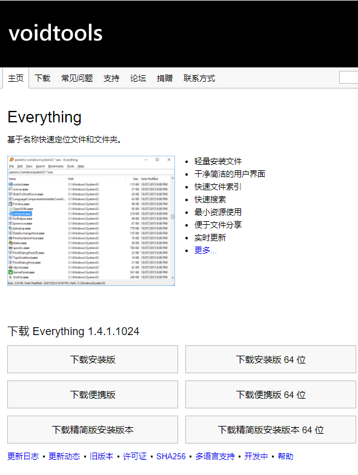
Everything 是基于名称快速定位文件和文件夹,非常快速的定位到文件在电脑的位置!
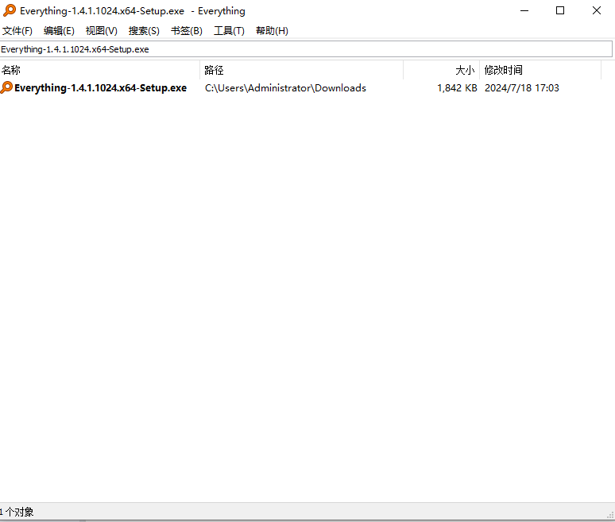
链接：https://pan.baidu.com/s/1tOyMF90K6VjHq-xyFqAEKQ?pwd=1bn3
提取码：1bn3
1.5. Iris 蓝光过滤护眼软件
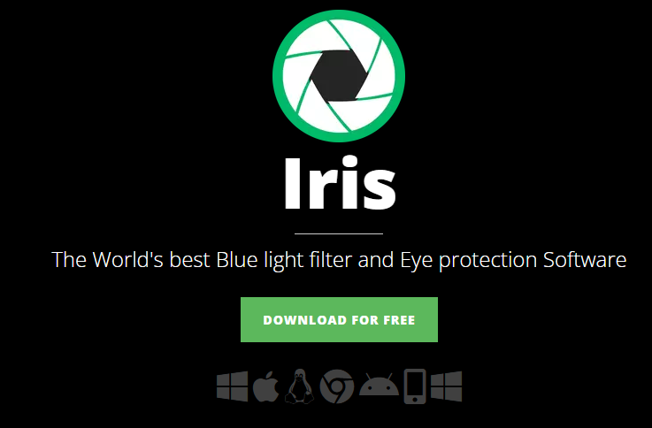
中文汉化版,支持多种健康模式,体验下来护眼效果不错,值得推荐~
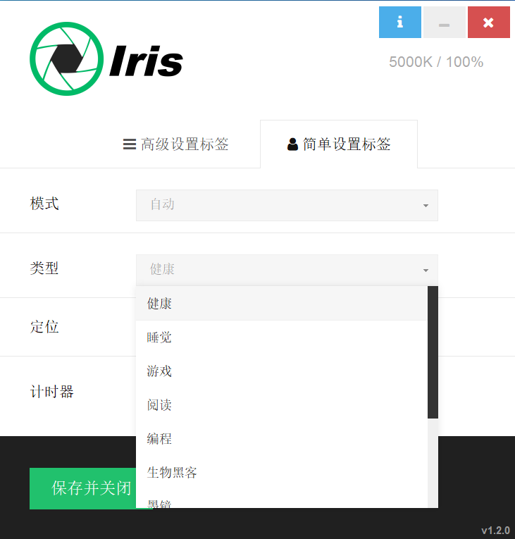
链接：https://pan.baidu.com/s/1o8L7wpvZrpqQioIHSmlDjg?pwd=qze2
提取码：qze2
1.6. SunloginClient 向日葵远程控制软件
是国产远程控制软件,支持手机端远程电脑电脑,异地操作电脑很方便,适合短期需求,比自带的远程桌面好用!
链接：https://pan.baidu.com/s/1-96ypR_CnYzGTI1d-CM5QA?pwd=b9ef
提取码：b9ef
1.7. PicGo 图片上传管理软件
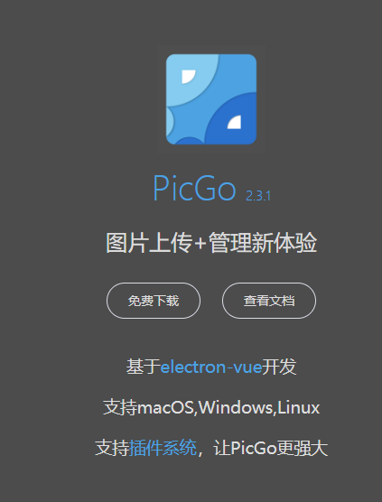
支持多款图床数据源,本地图片自动上传到云端,支持复制查看上传后的云端图片,例如您正在看到的图片都是来源于该软件托管的云图片哟!
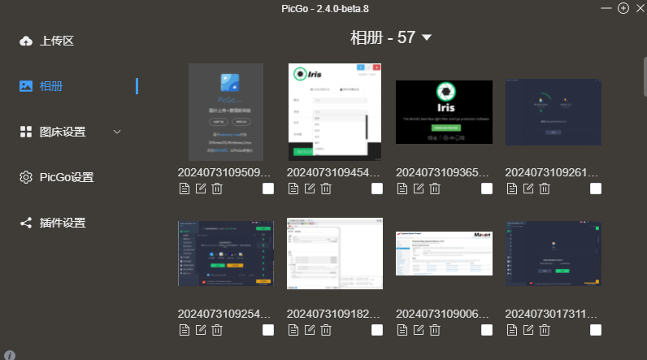
此外,PicGo不仅可以单独作为图床使用,还可以作为插件搭配其他软件一起.例如搭配 typora 写作软件自动上传本地图片到云端,一气呵成,不用手动修改本地图片地址而是自动替换成云端链接.
链接：https://pan.baidu.com/s/10CPRFHoIr09-O6LU-4_k2A?pwd=0pgw
提取码：0pgw
1.8. Typora 迷你Markdown格式阅读编辑器
最小的
Markdown格式编辑器和阅读器
顶部菜单栏-帮助-Use Images In Typora 有关于如何使用图片的说明文档.
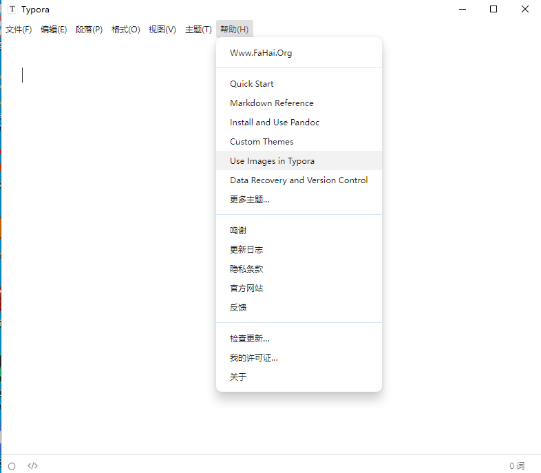
格式-图像-全局图像设置 有关于如何具体设置图片的选项,其中就有配合图床插件完成自动上传的神仙操作!
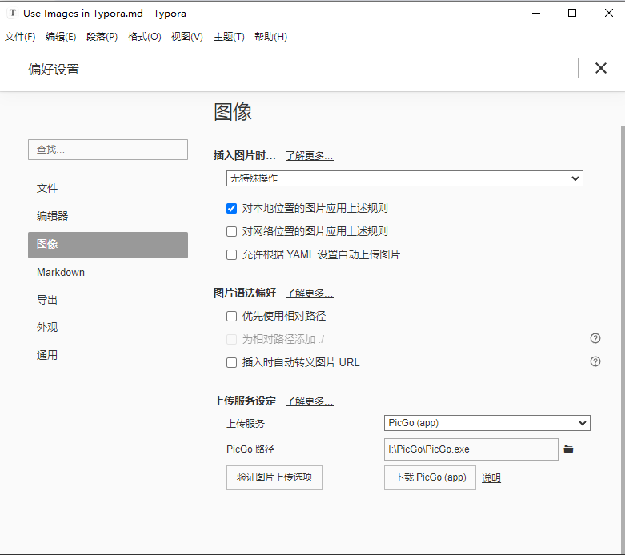
链接：https://pan.baidu.com/s/15YfzLVMezUbktOyLQVP0KQ?pwd=ufda
提取码：ufda
1.9. 总结
本文主要分享了平时使用电脑的一些常用软件,涉及到最经常使用的删除文件,卸载软件,搜索文件,上传图片,蓝光护眼,远程办公写作等基本场景.
IObit Unlocker文件解锁工具IObit Uninstaller强制卸载软件Everything任意文件搜索Iris蓝光过滤护眼SunloginClient向日葵远程控制PicGo图床管理TyporaMarkdown格式写作神器
嘿，小伙伴们，你们知道吗？这字儿可不是白码的，每一颗键帽下的汗水都能浇出一朵花来！所以，要是看得开心，就请大方地撒点阳光——评论点赞转发走一波，让我这花园更加灿烂！

1.10. 往期精彩文章
- 解锁Nginx日志的宝藏：GoAccess——你的实时、交互式Web日志分析神器！
- GoAccess中配置geoip支持ip地理位置
- GoAccess中配置websocket支持实时日志
- 谁家爬虫这么明目张胆?连UserAgent都不要了!
- GoAccess自定义每日独立访客面板时间格式：利用html-custom-js实现日期显示调整
- GoAccess实战秘籍：从新手到高手，跨越那些“坑”与“惑”！
1.11. 欢迎扫码关注

欢迎扫码关注,私信回复『加群』一起交流技术
作者: 雪之梦技术驿站
来源: 雪之梦技术驿站
本文原创发布于「雪之梦技术驿站」,转载请注明出处,谢谢合作!